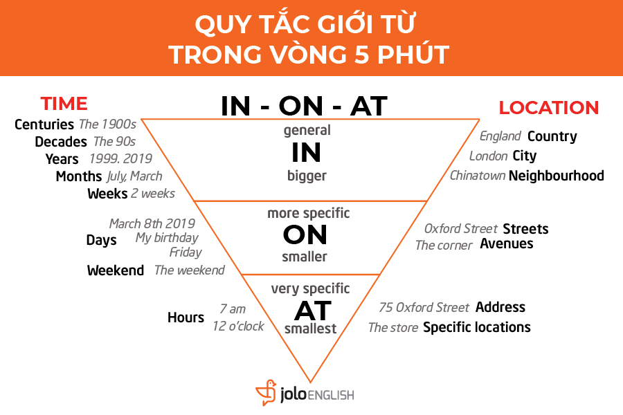

Prepositions
Prepositions are very common words. Seven of them are in the top 20 words in English. Prepositions link a word to another part of the sentence and tell us what the relationship is, for example in space or time.
What is a Preposition?
Giới từ (Prepositions) là những từ chỉ thời gian, vị trí… chỉ sự liên quan giữa các từ khác trong cụm, trong câu văn.
Giới từ được sử dụng trong câu với vai trò gắn kết các từ, cụm từ để giúp người đọc, người nghe hiểu rõ hơn câu văn, ngữ cảnh.
Preposition List
Short list of 70 of the more common prepositions
A Simple Rule for Prepositions
Một quy tắc cơ bản của giới từ bạn cần nắm rõ là sau giới từ sẽ luôn là danh từ
Bắt đầu học bài: Tất tần tần về giới từ
Preposition Rules
6 simple rules to help you use prepositions correctly
Prepositions

8 quy tắc sử dụng "by"
"By" là một trong những giới từ thông dụng nhất trong tiếng Anh, và đồng thời nó cũng rất "đa di năng"